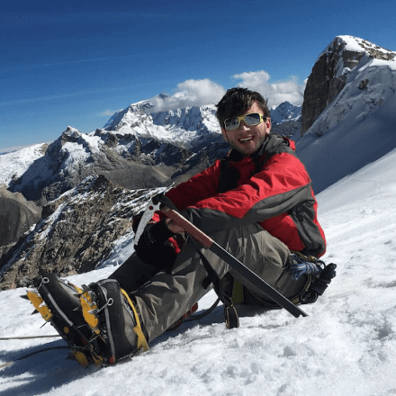
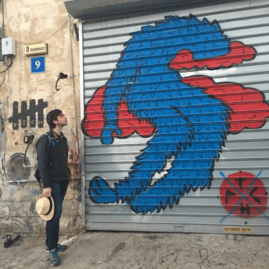
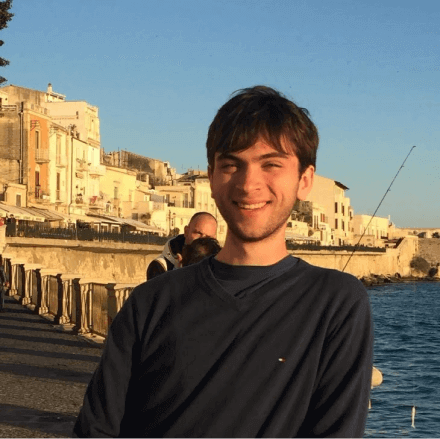
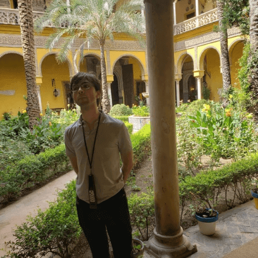
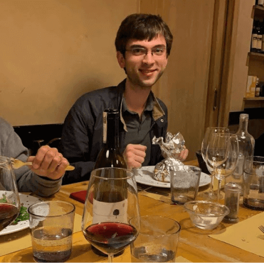
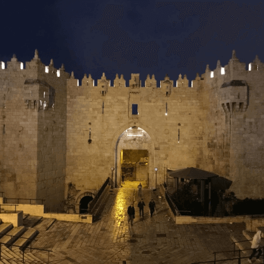

I produce Build your Superpower. It's a podcast that explores how our heroes built their superpowers to do something unique — so you can do the same.
I'm currently working on a consulting project for Shazam founder Dhiraj Mukherjee.
I'm also studying interaction design at the Tramontana Institute and am teaching myself to code.
I never imagined myself as a product manager when I studied at the LSE — because I hadn't really heard of it.
But I realized that was the career for me when I was the second-employee of a VC-funded start-up, where I spent most of my time developing the product. Once I started spending my late evenings and weekends learning about design and coding, I knew I had to focus on being a product manager.
Before that, I worked in venture capital and growth equity at GFC, and in Nexus Group's private equity team.
Read my Résumé »




